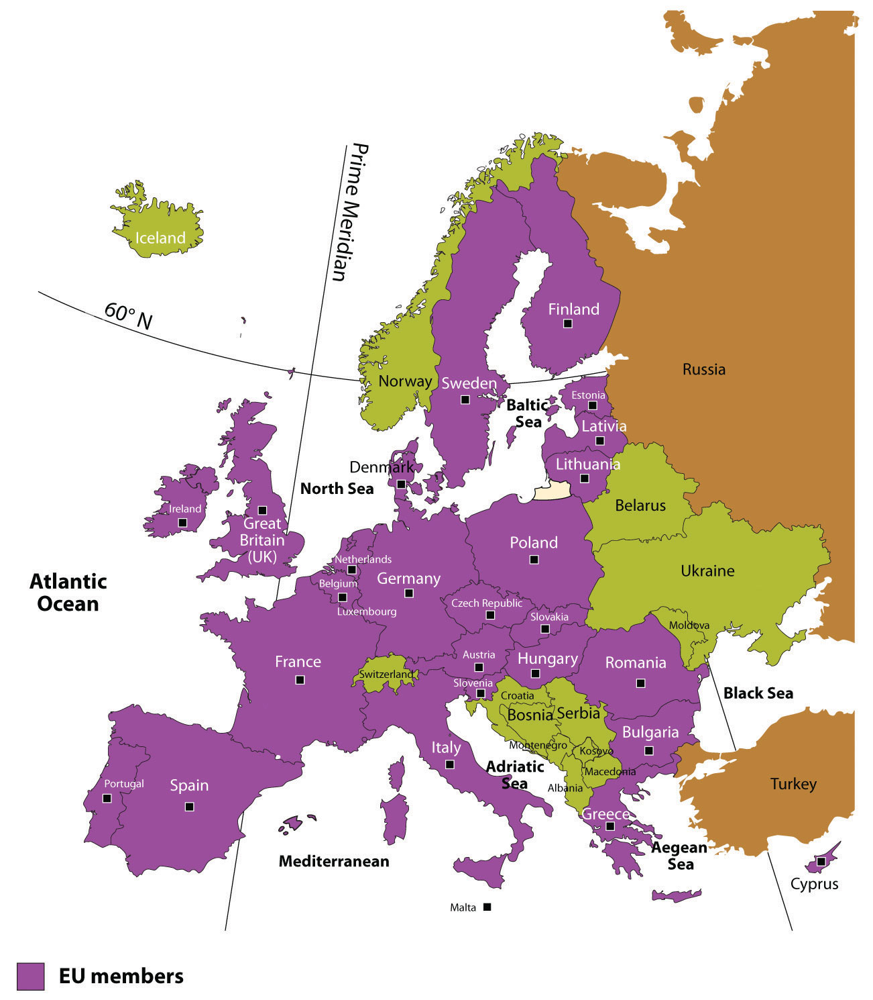
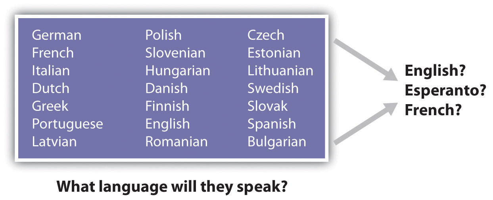
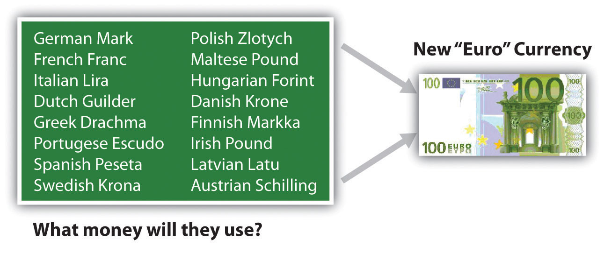
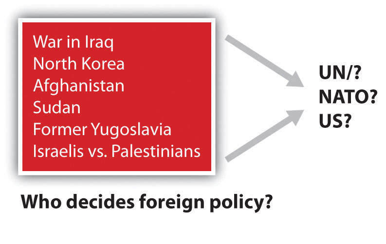

The world economy has a competitive marketplace. Each independent country has to compete economically to earn national income, but not all countries are equal in natual or human resources. The smaller countries of Europe may have difficulty competing with the world’s core economic powers such as Japan or the United States. Some of the countries of Europe are small in terms of physical area. In fact, the state of Texas is larger in square miles than any individual European country, and Kentucky is larger in size than more than half the European countries. The total physical area of all the European countries together equals only 60 percent of the total physical area of the United States. However, in regard to Europe, physical size may not an indicator of economic ability. A number of European countries possess a high level of economic output and are major forces in the global economy.
The economic forces of globalization have motivated the nation-states of Europe to work together rather than compete with each other. Western Europe as a region is highly industrialized and has a high standard of living. Unified, the countries could be a major economic power in the world. Separately and independently, they may not be able to compete at the same level as other globally recognized trading blocs. To become unified after a century of centrifugal forces dividing them has not been easy. Consider the cultural forces that have been active in Europe. Centripetal forces unifying the realm include a common Christian religion, Indo-European language groups, and a Caucasian ethnic background. These forces have not resulted in a unified Europe. The closest resemblance to a unified Europe was the Roman Empire, which was held together by military force.
During the twentieth century, there were three major divisions in Europe, all products of centrifugal forces. First, World War I, which was supposed to be the war to end all wars, divided Europe and the industrialized world. Second, World War II pitted the Axis powers (led by Germany and Italy with Adolph Hitler leading the German contingency) against the Allied powers (led by Great Britain and France with the United States entering later). Third, after World War II, the confrontation between communism and capitalism developed into the Cold WarConflict between capitalist Western democracies and the Eastern Communist countries that developed after World War II ended and continued until the collapse of the Soviet Union in 1991. The two main powers were the United States and the Soviet Union, which did not have direct military conflicts but fought each other in third world countries.. The Iron CurtainThe physical barrier in the form of walls, barbed wire, and land mines that divided Eastern Europe and Western Europe during the Cold War., built of concrete, barbed wire, and land mines, separated Communist Eastern Europe, which was dominated by the government of the Soviet Union, from the capitalist democracies of Western Europe, which were allied with the United States. When the Soviet Union collapsed in 1991, a new era arrived in Europe, and the power of unification emerged.
After World War II ended in Europe, the three small countries of Belgium, Netherlands, and Luxembourg realized that together they would be much stronger and recover more quickly from the war than if they remained separate. Belgium had banking and business; the Netherlands had industry, farming, and the world-class port of Rotterdam on the Rhine River; and Luxembourg had agricultural resources. To help recover from World War II, in 1944 the three countries signed an economic pact called the Benelux AgreementSupranational agreement between Belgium, the Netherlands, and Luxembourg that provided an early pattern for the European Union. (after the first syllables of each country’s name), which provided a successful example of unification and cooperation.
Implemented from 1948 to 1952, US Secretary of State George Marshall’s Marshall PlanUS Secretary of State George Marshall’s post–World War II initiative to help rebuild war-torn Europe with American aid and business connections (1948–52). helped rebuild war-torn Europe with American aid and business connections. US businesses and corporations benefited from the increased international trade with Europe. But to deter the European nations from going to war again, there needed to be an economic trade policy that encouraged a strong business climate. In 1957, the more prominent countries of France, West Germany, the Netherlands, Luxembourg, Italy, and Belgium got together and signed the Treaty of Rome, which created the Common MarketA precursor to the European Union created by the Treaty of Rome to establish common institutions and implement standards for trade and commerce among them.. This agreement provided the structure necessary to unify Europe under a European Union (EU) in 1992. Despite many problems, since World War II, steady efforts have been made toward European unification. The EU was the structure for a common economic system with an agreed-upon governing body, and it was designed as an economic trading bloc that could compete with the United States and Japan. A mechanism was finally in place for a supportive, unified Europe, but it would be up to the independent countries that joined this union to make it work.
Figure 2.11 EU Members as of 2010
Figure 2.12 The European Union and the Language Question
SupranationalismThe voluntary association of three or more independent states willing to yield some measure of sovereignty for mutual benefit. is defined as the voluntary association of three or more independent states willing to yield some measure of sovereignty for mutual benefit. The Benelux Agreement of 1944 was a model for European supranationalism. Nations are often hesitant to give up any sense of independence or autonomy, especially with the strong drive toward nation-state status. It is different for the United States: though the United States is not classified as a nation-state because of its ethnic diversity, English is the only major language and the dollar is the national currency. One can drive for two thousand miles across the United States and still experience a similar cultural urban landscape, complete with the same English-language road signs, identical franchised restaurants, common chain big-box stores, and similar advertising icons. This is not the case in Europe, where each country might have its own language, currency, traffic laws, and legal system. Supranationalism and unification can be a painful process. With common standards and a common currency comes the reality that a common cultural landscape might develop. Supranationalism could erode the uniqueness of each state as Europe becomes more of a “United States of Europe.”
The search for a solution to the language problem for the European Union is a serious endeavor. One of the solutions proposed was to use the artificial language Esperanto as the international language. Needless to say, this solution did not receive much support from member states and was rejected by the EU. Esperanto, introduced in 1887 as a neutral language, was formed using words from the Latin, Germanic, and Slavic language groups (the three main language groups of Europe).
Test Your Language Ability
http://www.esperanto-usa.org/en/node/107
Inteligenta persono lernas la lingvon Esperanto rapide kaj facile. Esperanto estas la moderna, kultura lingvo por la tuta mondo. Lernu la internacian lingvon Esperanto.
Check Your Translation
An intelligent person learns the language Esperanto rapidly and easily. Esperanto is the modern, cultural language for the whole world. Learn the international language Esperanto.
Figure 2.13
The euro was adopted in 1999. However, not all EU countries use the euro.
To address the differences in the many currencies used in Europe, the EU introduced a common currency called the euro. This solution encountered resistance but has been accepted by most EU members. Great Britain is a major economic player in the EU, but it has not adopted the euro as its main currency. It has kept the traditional English pound sterling. Most of the old currencies of EU members are being phased out and the single currency of the euro has become the standard. Even countries not currently in the EU have adopted the euro as their national currency.
Unification has created economic problems between the wealthy industrialized countries and the poorer regions of southern Europe. There is disagreement over how taxes or funds will be allocated. The poorer countries would like economic assistance in developing their industries. The wealthier nations are at times resistant to sharing their wealth. Italy has experienced this problem within its borders: Italy’s wealthy northern regions have hinted at separating from their poorer southern regions. This is an age-old problem that confronts governments of most countries.
Other questions arise with the supranational EU. How will the EU manage foreign affairs? Will the EU have a military? If so, how will it be managed? Who will command it? What will happen to the current military assets of each member country? Travel within the EU has also changed. Before the EU, people traveling between European countries encountered border checks at which their passports were checked and stamped, and different traffic laws existed for each country. This is changing. Once inside the EU, there are no more border stops, and traffic and travel are becoming streamlined with common laws, making travel between member nations similar to travel between US states.
Figure 2.14 The European Union and the Foreign Policy Issue
NATO is the North Atlantic Treaty Organization (Western Europe and North America).
Global trading blocs such as the EU are not uncommon. The United States, with Mexico and Canada, developed the North American Free Trade Agreement (NAFTA) to create a global economic trading bloc. Japan and neighboring countries work together as the East Asian Community (EAC), which is not an official organization but is a recognized entity that operates as an economic core area with its own alliances. Other larger or smaller economic trading blocs exist across the globe. Every continent has organizations that promote economic development for their regions or countries. Many of these agreements have developed into a type of economic supranationalism.
European countries have to confront both the centrifugal forces that rally their nations to remain uniquely independent and the centripetal forces that call for integration into the EU, which results in the loss of some of their autonomy. European cultures have a history of struggling to retain their heritage and traditions. The strong devolutionary forces that advocate for nation-state status are challenged by the need to belong to a larger union for economic survival. Europeans are caught between holding on to cultural heritage and moving forward economically in a competitive global economy. Similar forces are also felt in other regions of the world.
Germany, which united its western and eastern regions after the Iron Curtain came down, has climbed to the top of the economic ladder in Europe. Germany is also the largest country in Europe by population. Other EU nations are concerned that Germany might once again dominate their realms or bring about massive division in Europe. The Cold War, World War I, and World War II are not easily forgotten; they are vital events in European history that affected the whole world. Many Europeans are suspect of what the EU may evolve into. Others welcome a more open European community.
According to the 1993 Copenhagen European Council, “a country has to meet certain requirements to join the EU. These requirements include a stable democracy which respects human rights and the rule of law; a functioning market economy capable of competition within the EU; and the acceptance of the obligations of membership, including EU law. Evaluation of a country’s fulfillment of the criteria is the responsibility of the European Council.”“European Union,” Translation Directory, accessed September 13, 2011, http://www.translationdirectory.com/articles/article1627.php.
In 2010, the EU had twenty-seven member states representing almost five hundred million people. A number of additional states are applying for membership, so the number of EU member states continues to change. In 2010, there were twenty-three official EU business languages. Each EU state now has its own military for national defense. A majority of EU members also hold membership in the North Atlantic Treaty Organization (NATO), which is a political alliance between Western European countries, Canada, and the United States. The EU is one of many global supranational entities. Such economic and political associations have increased across the globe. Every continent has its own array of national agreements between countries that are designed to provide greater opportunities and advantages for its members. Competition for labor and resources drives the need for smaller countries to join to compete economically in the global marketplace. The EU is in the driver of one of the three main core economic areas of the world: North America, Western Europe, and Eastern Asia.
Figure 2.15 Global Groups with the Big Three Core Areas of North America, Western Europe, and Eastern Asia

Europe has experienced strong centripetal and centrifugal forces throughout its history. From the Roman Empire to the European Union, the historical pattern of development in Europe is a model study in regional geography. From empire to nation-state and now to a union, the continent struggles to confront these cultural forces that unite and divide. The EU is an example of what supranationalism can produce. To compete in a global economy, the nation-states of Europe must cooperate and coordinate their industrial activities to support their high standard of living. The EU member states are a part of the elite “have” nations of the world. They face many questions about their future, and they will be watched closely by the rest of the world.